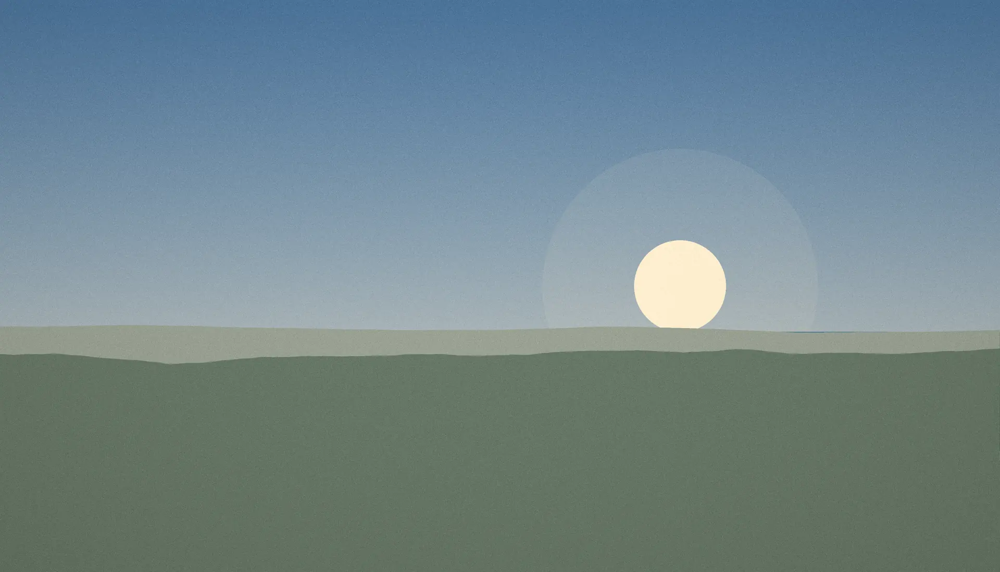
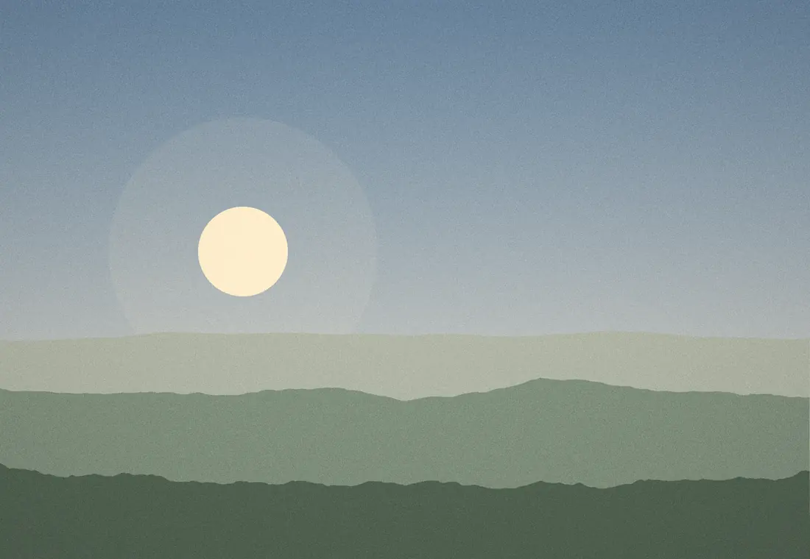
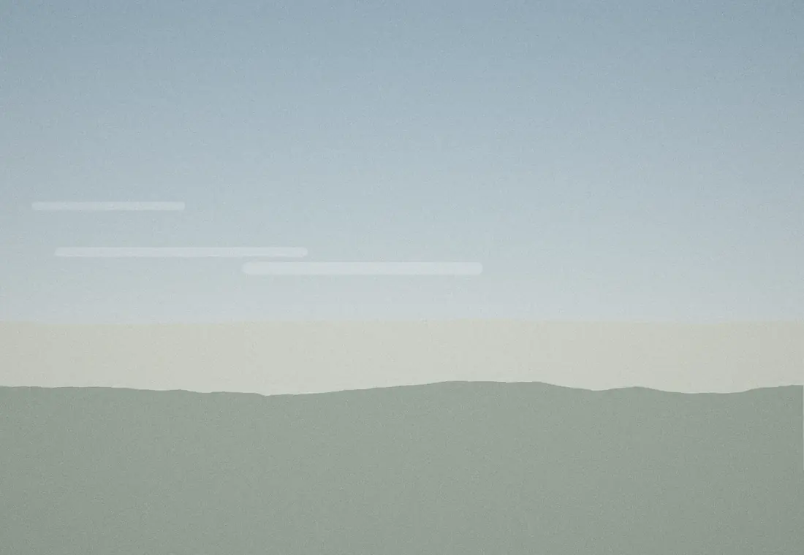

Basse saison
Novembre à mars
95 € / nuit
2 nuits minimum

Gîte de charme · Carnac, Morbihan
Une longère de pierre rénovée, trois chambres, un jardin clos. On y vient à pied jusqu’à la mer, et on y reste plus longtemps que prévu.
La longère date de 1890. Murs en granit, sol en chêne, cheminée à insert. Nous l’avons rénovée en gardant la pierre apparente et en isolant par l’intérieur : elle reste fraîche l’été et chaude l’hiver.
Le linge de lit et de toilette est fourni. La cuisine est équipée pour de vrais repas, pas seulement pour des pâtes.

Le jardin, côté sud
Brume du matin sur la landeCliquez sur le jour d’arrivée, puis sur le jour de départ. Les dates barrées sont déjà réservées.
Libre Réservé Votre séjour
Novembre à mars
95 € / nuit
2 nuits minimum
Avril à juin · septembre · octobre
130 € / nuit
3 nuits minimum
Juillet et août
185 € / nuit
7 nuits minimum, du samedi au samedi